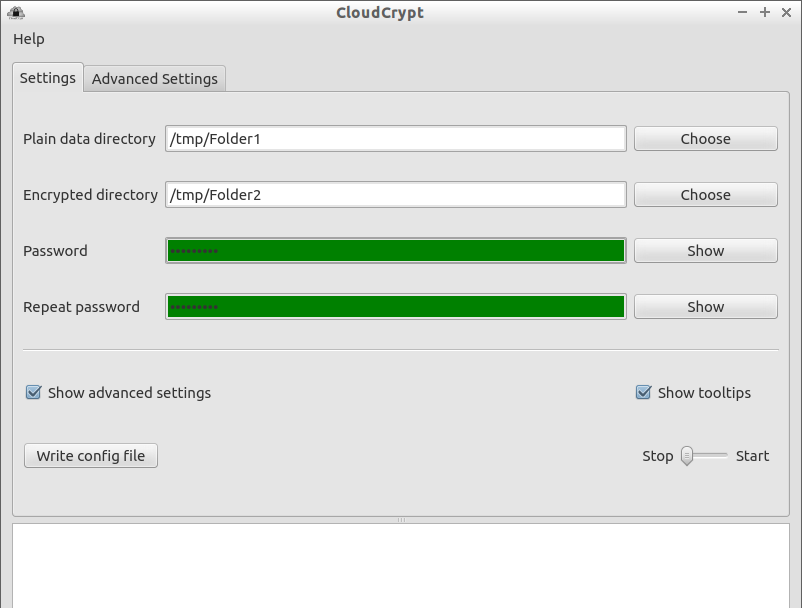
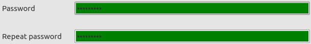
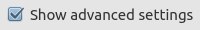
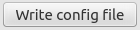
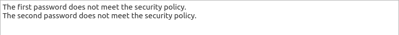

Manual
Usage of the software
After starting the software the following window should open up:
In the tab Settings you can choose the directory for your unencrypted data. You should create a new directory for that purpose and avoid choosing another one. The result may be the encryption and synchronization of a huge lot of data, which is (most probably) not intended.
In the line below you can choose the local directory of your cloud-service. This is the place where your data will be copied to after encrypting it. Of course, you data will only be uploaded to the cloud when choosing the correct directory of the cloud you are using.
In the two following lines you can enter your password. If the passwords do not match or do not satisfy the security policy, the lines will be colored in red. If the passwords are valid the lines will be green.
With the buttons you can make the passwords visible. The passwords will only be visible as long as you click on the buttons.
After ticking the checkbox  most of the elements in the interface will display short descriptions about their
purpose and usage. The tooltips are visible when hovering your cursor over the
element.
most of the elements in the interface will display short descriptions about their
purpose and usage. The tooltips are visible when hovering your cursor over the
element.
After ticking the checkbox  a new tab will appear in the window. In this tab you can edit the most settings of the software manually, delete them or setting them back to defaults
| Warning: By modifying the settings you may influence the usability and/or the stability of the software in a negative way. This may also lead to to inability to read your encrypted data. For a normal user there is no reason to edit the settings manually. |
In the tab Settings there is a button down at the bottom which says . With this button you can write the config file after you edited the settings manually. The config file will be written by starting the synchronization or quitting the application, too.
With the slider at the bottom right corner of the window you can start and stop the synchronization (if you have entered all required values). When starting the software will start the encryption of your data and will copy them to the cloud folder. Afterwards this procedure will be executed reversely (so your data will also be synchronized from the cloud). If a file already exists in its opposite directory, the file will only be copied if the file is newer than the other one. The whole procedure will be repeated every 30 seconds, until you stop the synchronization.
Notice: We can not influence the time when your cloud service will really synchronize the files to the cloud server. This depends on the cloud service, you network load and some other factors. CloudCrypt just copies and encrypts files on the local system.
At the bottom of the window there is a message area where important messages like errors will be displayed. For example, if your passwords are not equal you will be informed about it here.
Some important notes
| If you want to store unencrypted data in your cloud you must do this manually. You should create a new folder for this purpose because of CloudCrypt completely ignoring unencrypted files inside the cloud folder. |
| You should NEVER edit the files of the software manually. This can - in the worst case scenario - lead to the incapability to read your encrypted data. Do not edit the files and create backups of your data regularly. |
| In order to use the software on another system, you should simply copy the while folder of CloudCrypt to the second system (after starting the software for the first time). Afterwards you may most probably have to change the directories for the plain data and the cloud. With this procedure your data should be readable and your password should be the same on both systems. |